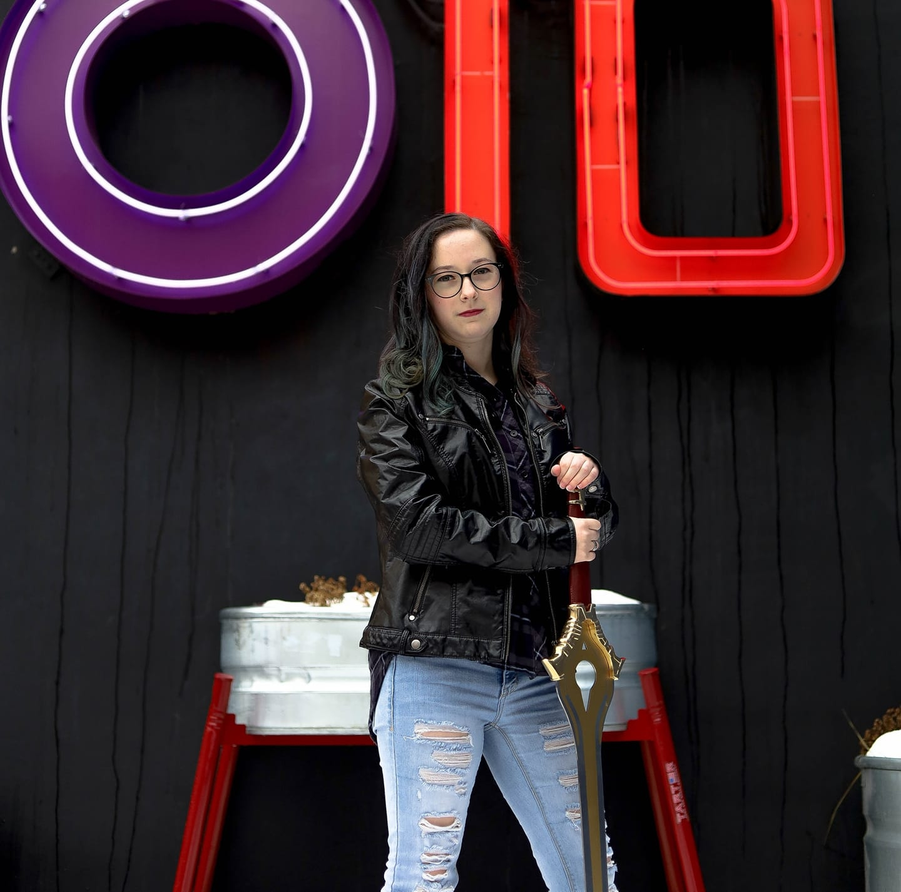
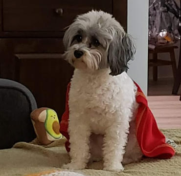
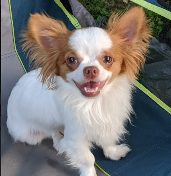
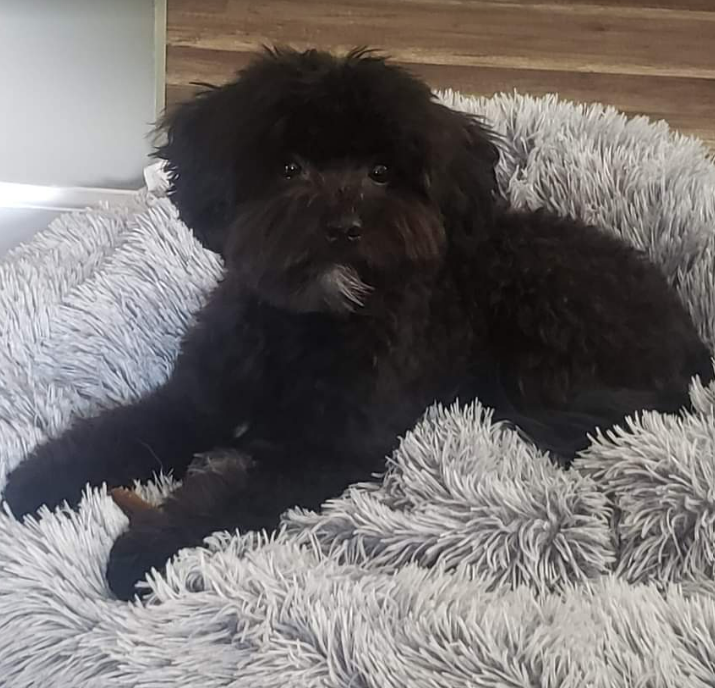

|  | I am from a small town in Missouri called Lone Jack, I graduated from the high school there. Currently I am attending the University of Advancing Technology as a Honors student pursuing a degree in Advancing Computer Science. When I am not working on any assignments or projects, I can be found playing video games or watching anime. Whatever I am doing, I am very likely listening to music as I am always listening to music. Lately I have been looking into gourmet marshmallows as I have quite the sweet tooth. I am a big dog lover and have three little puppies of my own. |
| Alfred | Oliver | Winston |
|---|---|---|
|  |  |  |